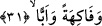

sabun yapılır. Peygamber Efendimiz bazı zamanlar zeytinyağı sürünürdü.[21]
“Ve hurma ağaçları” çıkardık. Bu mânâda âyette yer alan kelime “nahlen”
kelimesidir. Bu kelime, sözlükte hurma ağacı anlamına gelir. Taze hurma ve kuru hurma
en faydalı yiyeceklerdendir. Hurma çeşitlerinin içinde “acve” adında bir çeşit vardır ki
bu tür hurma zehirlenme illetini ve sihiri insandan savuşturur. Hurma ağacı daha önce
ayrıntısıyla açıklandığı üzere Adem (a.s.)’ın yaratılmış olduğu çamurun arta kalanından
türemiştir.
30. İri ve sık ağaçlı bahçeler,
Âyetteki “hadâika” kelimesi, “hadîka” kelimesinin çoğuludur. Hadîka; ağaçlı bahçe,
hurma ağaçları ve başka ağaçlardan oluşmuş bostan ve bahçe demektir. Yahut hadîka;
etrafını bina ya da bir kısım hurma ağaçlarının çevirmiş olduğu alan anlamına gelir.
Âyette kasdedilen ise tahsisten sonra tamim kabilindendir. Âyetteki “ğulb”, “ağleb”
kelimesinin çoğuludur. Bu kelime sözlükte boynun sıfatı olarak kullanılır. Ancak burada
istiâre yoluyla bahçelerin sıfatı olmuştur.
Arapçada “raculun ağleb” ve “esedun ağleb” denilirki bu deyimlerde kelime gerçek
anlamında “boynu kalın adam” ve “boynu kalın aslan” demektir. Burada kelime, az önce
işâret ettiğimiz üzere istiâre yoluyla “hadâik/bahçeler”in sıfatı olmuştur. Dolayısıyla
“hadâika ğulben”, büyük bahçeler demektir. Nitekim biz de “iri ve sık ağaçlı bahçeler”
şeklinde ifâde ettik. Bahçelerin bu kelime ile nitelenmesi, ağaçlarının sık ve çok olması
ya da bahçelerin iri iri ağaçlardan oluşmuş olmasından dolayıdır.
Buna göre kelimenin birinci anlamda kullanılması istiâre-i ma’neviye kabilinden;
ikinci anlamda kullanılması ise mecâz-ı mürsel kabilindendir. Şâyet “boyun kalınlığı”
tâbiriyle, “mukayyed”in söylenip bununla “mutlak”ın murad edilmesi yoluyla “mutlak
kalınlık” kasdedilmişse o zaman bu deyim buruna “el-mirsen” denmesi kabilindendir.
“Ğulben” kelimesi burada “bahçeler” kelimesine, bahçelerin içindeki ağaçların hâli göz
önüne alınmak sûretiyle sıfat olarak getirilmiş ve buna sözlük anlamına binâen istiâre
denmiştir.
Keşfu’l-esrar’da belirtildiğine göre arapçada “ el-ğulbu mine’ş-şecere” dendiğinde
bununla çam, rezene, dikenli ardıç ve kara ağaç gibi meyve vermeyen ağaçlar
kasdedilir.
31. Meyveler ve çayırlar bitirdik.